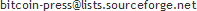

Bitcoin is a peer-to-peer digital currency. Peer-to-peer (P2P) means that there is no central authority to issue new money or keep track of transactions. Instead, these tasks are managed collectively by the nodes of the network. Advantages:
- Bitcoins can be sent easily through the Internet, without having to trust middlemen.
- Transactions are designed to be computationally prohibitive to reverse.
- Be safe from instability caused by fractional reserve banking and central banks. The limited inflation of the Bitcoin system's money supply is distributed evenly (by CPU power) throughout the network, not monopolized by banks.
The total eventual circulation will be 21 million bitcoins. There will never be more coins than that. The coins are entering circulation gradually, at a steady pace over many years, to nodes supporting the network in proportion to the CPU time they contribute. With the current total CPU power on the network, most CPUs will usually take months between successfully generating 50 BTC.
You can get a few free bitcoins from the Bitcoin Faucet. If Bitcoin is running when you receive a transaction, you can see it immediately, otherwise it may take 10 minutes or more after it was sent, and all blocks need to have finished downloading. Visit Bitcoin Watch to see the current block count.
Download
- Windows: Install Now 5.8MB
- Windows: Zip Package 6.9MB
- Mac OS X (10.5+ Intel): Zip Package 7.7MB
- Linux (32-bit & 64-bit): Tarball 9.8MB
- Project Page: SourceForge
- Latest source code: GitHub
Contact / IRC
- Join the Bitcoin Forum
- Join the project's active IRC channels on the FreeNode network or use the FreeNode Web IRC.
- #bitcoin-discussion (General Bitcoin-related)
- #bitcoin-dev (Development and technical)
- #bitcoin-otc (Over The Counter exchange)
- #bitcoin-market (Live quotes from markets)
- #bitcoin-mining (GPU mining related)
Resources
Project
- Community-driven open source project, released under the MIT license
- Project Developers
- Press mailing list for presentation and interview requests: 